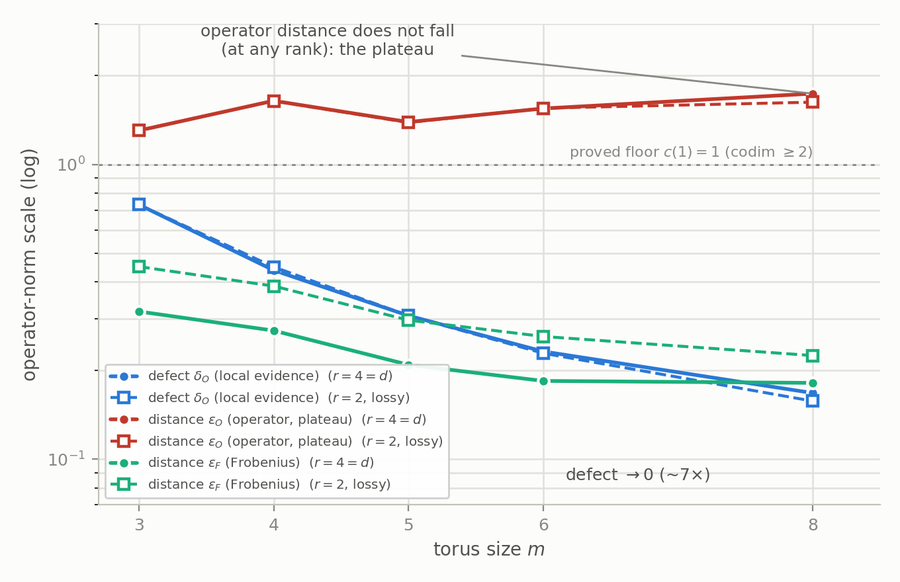
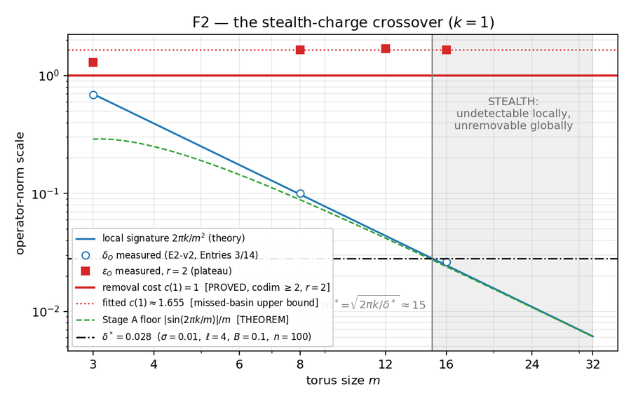
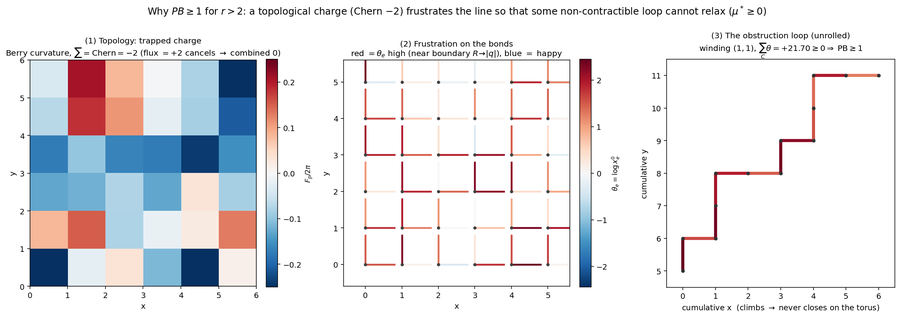
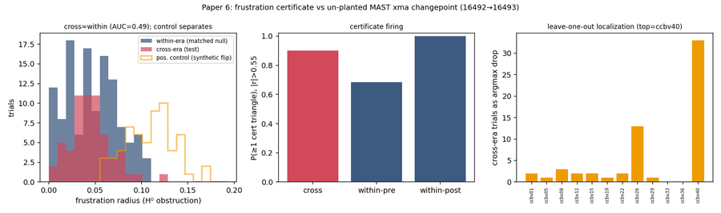

Paper 1 · Applied · MAST + LHD validation
A distribution-free certificate for calibration inconsistency, validated on two fusion machines under one untuned pipeline. Key result: a drift fault that leaves every pairwise residual statistically clean (0.218 vs 0.223 null) is detected at AUC 0.976–1.000 and localized to the faulted instrument.
In plain terms: every pair of sensors can agree while the network as a whole is inconsistent. Cycle frustration measures exactly the part pairwise checks cannot see — and comes with a proof of when it certifies a fault.

Paper 2 · Theory · Reproducible numerics
Stability of almost-representations extended to non-invertible targets. Key result: on the torus, a topological index keeps the system at fixed operator distance from consistency even as every local defect vanishes — through rank loss.
In plain terms: when translations between components destroy information, some global defects still cannot be smoothed away locally. The obstruction is topological, and it survives the information loss.

Paper 3 · Synthesis · Detection vs removal
A topological charge whose local signature falls below every detection threshold while its removal cost stays pinned at a proved floor. Key result: a quantitative crossover scale m* separating the visible regime from the stealth regime, with a falsification map for every load-bearing claim.
In plain terms: past a certain system size, a real global fault can hide below every local monitor's noise floor — yet no local repair can remove it. Detection capacity and topological protection are different budgets.
⊢
Paper 4 · Method · Lean 4, machine-checked
Lean 4 formalization as an active research instrument, not an after-the-fact certificate. Key result: the proof assistant caught two errors in opposite directions — falsifying a plausible invariant by constructing the counterexample, then deleting a step earlier drafts treated as half the open problem.
In plain terms: the machine did not just check the mathematics; it corrected the research direction twice. The full formalization is public.

Paper 5 · Theory · Spectral vs topological
The m-uniform rigidity of a lossy magnetic pair is topological, not spectral. Key result: three independently measured gaps collapse onto one index obstruction, and the rigidity constant is resolved by codimension — exactly 1 at codimension ≥ 2.
In plain terms: three phenomena that look like separate stability effects are one and the same integer doing the work. Knowing which one lets you predict the constant.

Paper 6 · Audit · Pre-registered, real archive fault
A pre-registered certificate audit of the documented MAST magnetics changepoint at shot 16493. Key result: the certificate stays silent on the real boundary (AUC 0.485) while the planted positive control fires (AUC 0.95) — so the archive's quality flag encodes a decision, not a measured inconsistency.
In plain terms: an honest negative, reported in full. Running the instrument against a real archive event shows precisely what data-quality flags do and do not mean — both directions of that answer are useful.